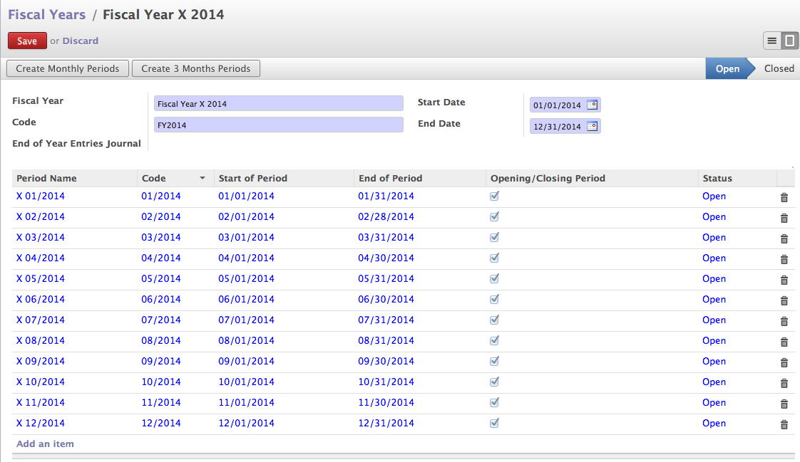

Setup Books of Accounts¶
Accounting system is the hart of any Enterprise System as it is linked to every business process such as sales, purchase, human resource, manufacturing, etc... and financial statements are represent the performance of each company.
In order to setup the accounting system we need to configure some prerequisite like chart of account, financial period, journals (books), and taxes. We will setup below prerequisite objects to encode the sales and payment receipt transaction.
- Fiscal Period : Current financial periods
- Chart of Accounts : Local Sales, Export Sales, Bank Account, Cash Account
- Journals (Books) : Sales, Bank and Cash
Note
Before you proceed to the configuration of Books of Accounting, Installing the Accounting or related module from Apps Store.
Fiscal Periods¶
A fiscal year (or financial year, or sometimes budget year) is a period used for calculating annual (“yearly”) financial statements in businesses and other organizations. In many jurisdictions, regulatory laws regarding accounting and taxation require such reports once per twelve months, but do not require that the period reported on constitutes a calendar year (that is, 1 January to 31 December). Fiscal years vary between businesses and countries. The “fiscal year” may also refer to the year used for income tax reporting.
Fiscal Periods
So, depending on the country fiscal period need to define by the companies. If you want configure your multinational company in OpenERP you can define multiple companies and you can define fiscal year per country as well.
Fiscal Year¶
Name the fiscal year which is easy to understand, this name may not be appear on any of the reports used to identify internally. i.e. Many countries have financial year from January to December for them it is easy to keep name like FY-2013, or FY-2014, where some countrie’s fiscal periods spread in two different years like April 2013 to Match 2014 they can give FY-2013/2014.
Code¶
A short code of the fiscal year. Like 2013, 2014 or 2013-2014
Start & End Date¶
First and Last day of the fiscal period. i.e 1st January to 31st December or in some country 1st April to 31st March, Etc...
End of Year Entries Journal¶
A Journal which contains entries transfer the balance from current to next financial year. When you proceed to close the fiscal year from Accounting → Periodic Processing → End of Period → Generate Opening Entries it will ask for the Opening Journal Entries on successfully closing year the year the same journal link to closed fiscal year.
Note
A default fiscal period may be created during the setup of database or when you install account or any related module, you can define a date during installation. If you want to change later either remove all periods and create a new periods after changing the dates of create a new fiscal year and remove the existing year.
Chart of Account¶
While installing the Accounting or related module you have been asked to various configurations. Chart of Account is one of them. OpenERP support almost 25+ countries pre-configured charts of account.

Chart of Accounts
You can still change the chart as the given chart may not gives you all the modules you need. You can create new or modify them from Accounting → Configuration → Accounts → Accounts.

Configure Account
Account Code & Name¶
In each country, standard coding system defined to define an account, It will be easier for the Accountant and Auditors to process those account quickly depending on the codes. You can define those code and name as an Account code and name.
Parent¶
Many financial software have the concept of grouping the account under the heads sometimes they called it Groups too. In OpenERP you can define those groups or heads in terms of account with the type view. You can choose all the account as a parent those who define as a internal type as view. So, all account with internal type as can be called a groups or heads.
Internal Type¶
Internal Type define behaviour of the account in system. Depending on that it allows certain operations on certain account and restriction of the selecting some account is also works based on internal type as well.
- View : Define account as a Head / Group, we can not encode any financial transaction on view account.
- Regular : All the account who falls under the Profit and Loss account which does not need any special treatment can be define as a Regular Account
- Receivable & Payable : Used to define the customer or suppliers account.
- Liquidity : To define all the assets which can be convert in to cash easily, all those types of account define as a Liquidity. i.e. Bank, Cash, Shares Purchased, Etc...
- Consolidation : Used to define groups / heads for multiple accounts. It is use in some special case like groups all bank accounts when working with the multi-company to get the overall bank balance.
- Closed : Once you define account as closed, we can not pass any entries to those accounts. It used in the reports but not available for the entry encoding.
Account Type¶
Account type is used to configure the legal reports in the accounting system. Depending on the type selected account will be appear on the Balance sheet or Profit and Loss statement. You can define as many type you want, important fields on type are P&L / BS Category and Deferral Method.
- P&L / BS Category : You can choose when the account will be displayed. In Balance Sheet (Asset or Liability) or Profit & Loss (Income or Expense) side.
- Deferral Method : You have to choose an option, when the financial year will get close, what to transfer in to the next financial year in the respective accounts ? Only Balance, All details including the reconciled items, or just Unreconciled items or select None to transfer nothing.
Journals (Books)¶
Like a paper based accounting system we keep different books to encode different types of transactions like Sales book to encode sales, Purchase Book to encode purchase, Bank book to encode bank transactions, Etc.. In OpenERP we can maintain the same books in terms of Journals, we can create many journals depending on our strategy how we would like to keep the accounting systems access and printing of the accounts.
You can add new journals from Accounting → Configuration Journals → Journal, you need to configure few things depending on the types of journals you are going to create.

Journal (Book)
Many small companies keep the same books for long time to encode the transaction i.e. one sales book for 5 years, while some companies required to have the new books every year and old books goes to archive to preserve for at least for next 5 to 7 years.
Journal Name¶
Name of the journal you want to create. It is depending on your system you decided to keep on maintain. If you plan to keep only one journal Retail Sales Book over the multiple fiscal years then Retail Sales Book is enough name else you can define a name like Retail Sales Book / 2014 or Retail Sales Book / 2014-2015
Code¶
Short name for the journal use to identify and search journal easily on various entry systems such as Invoice, Vouchers, and Journal Entries.
Type¶
A Key field for journal to differentiate the journals to select in various entry system depending on the value of this field. There are various types defined and you can choose those types to specify the journal type.
- Sale : Define a Sales Journal, Customer Invoice allows to select one from all sales journals while sales
- Sales Return : Define Sales return journal, Customer refund invoice allows to select one from available sale refund journals
- Purchase : Define a Purchase Journal, Supplier Invoice allows to select one from all purchase journals while purchase
- Purchase Return : Define Purchase return journal, Supplier refund invoice allows to select one from available purchase refund journals
- Cash : to define a cash box you can select this journals, while creating cash journal you must supply the cash account
- Bank & Checks : Used to define a bank and checks book, for writing all bank transactions
- General : All transactions which are not any of the above types, like contra entry, inter-account transfer.
- Opening / Closing Situation : Special types of journal use for encode the opening / closing entries
Entry Sequence¶
It is a number sequence which defied numbers for each transaction encode in this journal. For every newly created journals the entry sequence will be created automatically, and default numbers format will be Journal Type/Year/00001 for our Retail Sales Book journal it is RSB/2014/0001.
Centralized Counterpart¶
Use with the opening / closing journal. When you pass debit entries to enter the opening balance a credit entry will be created and sum in to the same.
Skip ‘Draft’ State for Manual Entries¶
When this checked all entries entries encode to this journal will direct goes to the posted state.
Check Date in Period¶
If the entry date is not in the fiscal period it will not allow those entries if this is checked.
Group Invoice Lines¶
If this box is checked, the system will try to group the accounting lines when generating them from invoices
Note
If you would like to apply changes once the entries posted, you should install the Cancel Journal Entries account_cancel module and then check the options Allow Cancelling Entries on journal.